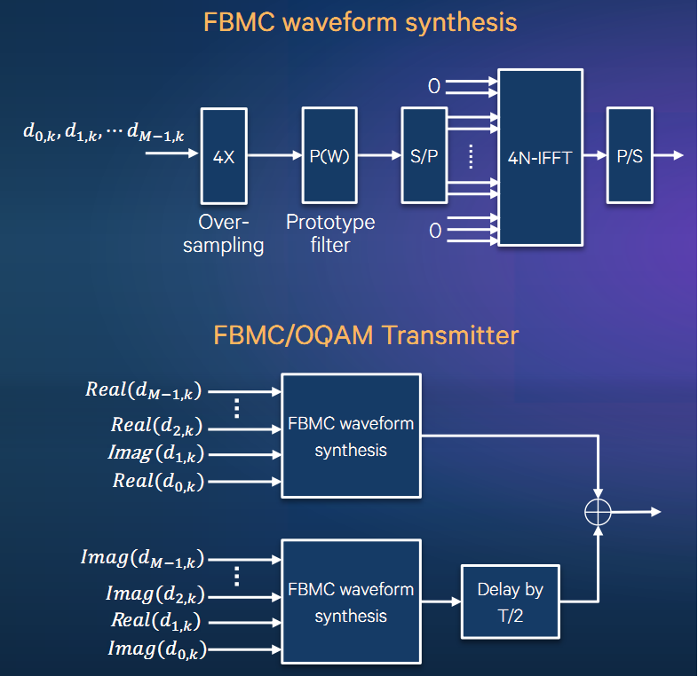
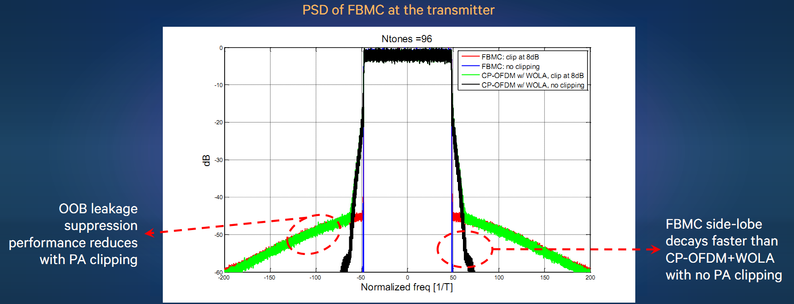
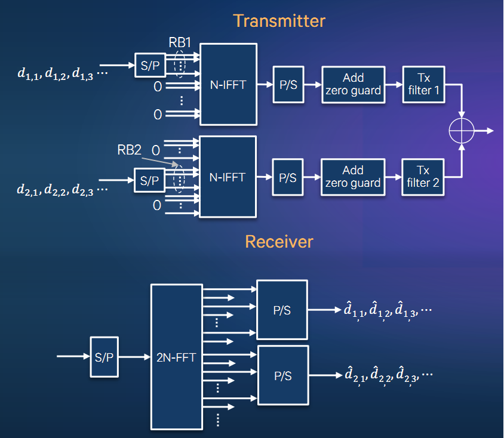
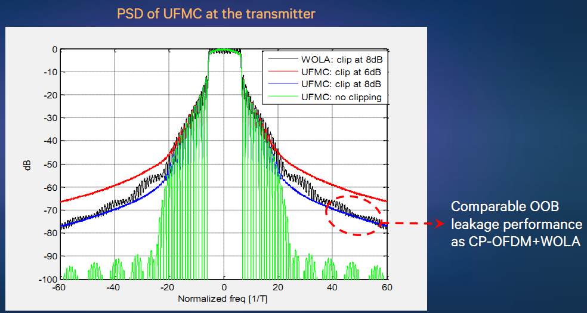
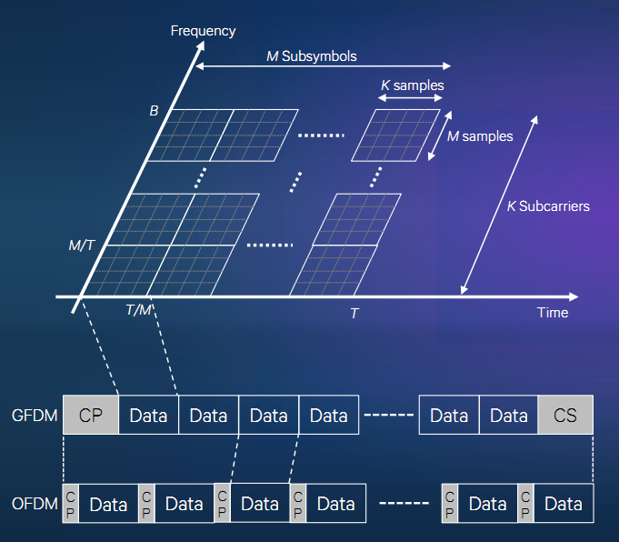
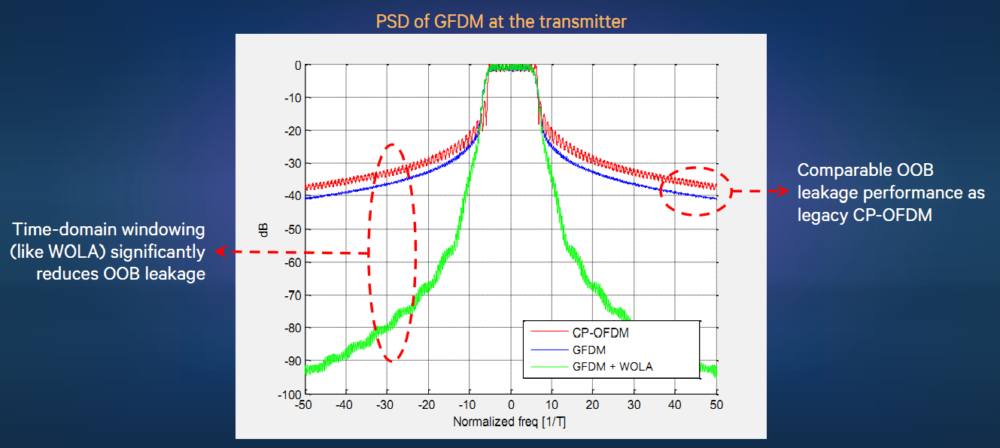
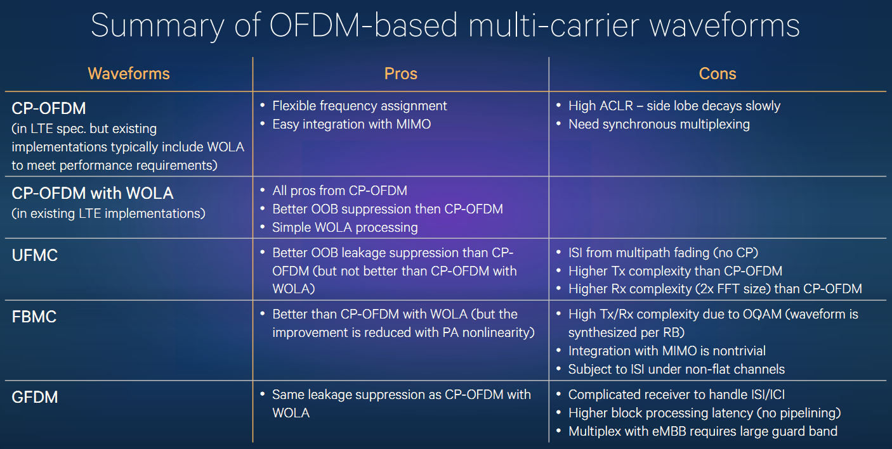
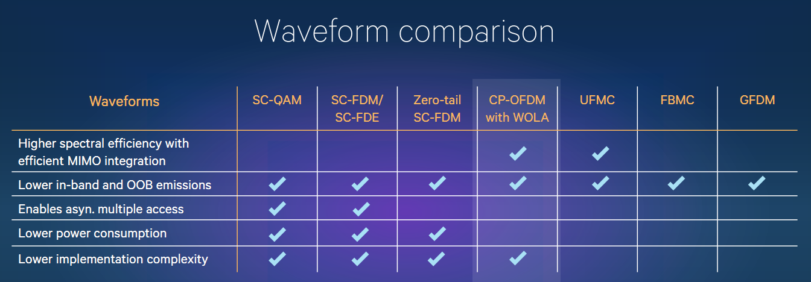
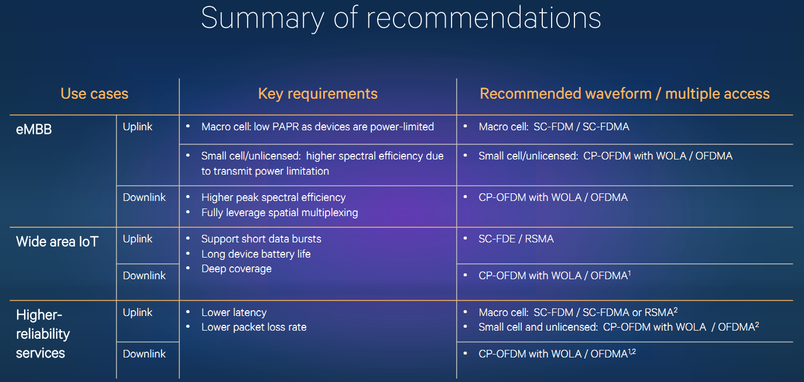

5G下行候选新波形简介(1)--FBMC、UFMC、GFDM
目前4G LTE下行波形为CP-OFDM，为改善ACLR性能，通常会再进行滤波处理（又称WOLA，Weighted OverLap and Add – Windowing technique）以降低OOB辐射。
5G考虑到频谱效率、非正交接入、多业务共存等，需要尽可能降低带内与带外辐射，降低对相邻PRBs、band的干扰。
5G目前讨论的下行候选波形，主要包括三种：FBMC(Filter Bank Multi-Carrier)、UFMC(Universal Filtered Multi-Carrier)、GFDM(Generalized frequency division multiplexing)。
三种技术均是通过加滤波器的方式，不再需要CP或仅需要短ZP，以期提升频谱效率。相应地，收发处理会增加复杂度，以减轻ISI/ICI的影响。
FBMC通过多相网络对各个子载波进行滤波，UFMC对RBs进行滤波，GFDM在频域进行单抽头滤波。
Qualcomm在《5g-research-on-waveform-and-multiple-access-techniques》中对这三种候选新波形进行了评估，摘要如下。
FBMC的结构与性能如下：


UFMC的结构与性能如下：


GFDM的结构与性能如下：


三种波形与CP-OFDM-WOLA的比较如下：


从5G的三种应用场景考虑，QC最终建议下行仍然使用CP-OFDM-WOLA.
